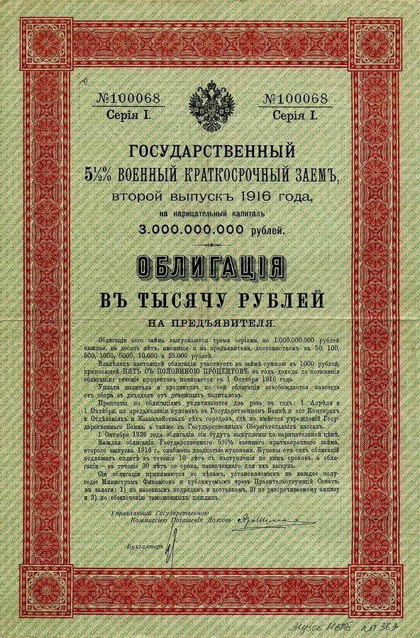

average down
… average down. The problems, he deemed …
向下摊平：越跌越买，拉低平均成本
52 买一份、42 再买一份，平均成本就成了 47。交易员的行话。
这一章是作者编的两个交易员的案例：一个是做新兴市场债券的 Carlos，一个是第 1 章住在 Nero 对街的高收益债交易员 John。作者先讲他们怎样做生意、怎样被银行器重，再列出这类交易员的六个毛病，最后跳到达尔文：竞争是不是总让更好的人留下来？读的时候抓一条线：一个人这几年赚得多，能说明他什么。好玩的地方在 Carlos 的口头禅、宽客 Henry 的风险报告，和一位布鲁克林老交易员的一句嘀咕。

第 3 章讲了蒙特卡洛和看盘的牙医，第 4 章是一段关于胡说八道的离题。这一章回到交易室，是第一部第一个完整的案例。John 1998 年 9 月出了什么事，第 1 章 §9 已经说了，作者说细节在这一章。最后两节话题推到演化论，章旨说这一章是归纳问题的「序幕」，为第 6 章的偏态、第 7 章的归纳问题铺路。§10 最后一句回提第 1 章的梭伦和「对街的有钱邻居」。
§4 有一句很满的话：任何时候，最有钱的交易员往往是最差的。撑着它的是作者编的两个人物，不是数据；基金业绩的研究大多支持「一时的排名里混着很多运气」，并不支持「往往最差」。详细的在页末。
一个人这几年一直赚钱，能说明他有本事吗？
读的时候带着这几个问题。不用先找答案，读完回来对照「检查一下理解」。
两条故事线前后排着，再收成一张清单和一段议论。§1–§4 是 Carlos：派对上的初见，一段对新兴市场交易员的刻薄群像，他的好年头，然后一个月一个月地讲，读起来像一篇短篇小说。§5、§6 换成 John，第 1 章见过他，这里给的是生意的机制和数字，会觉得「又讲一遍」，但这次有账可算。§7 很短，是作者给自己的说法加的一个限定。§8 是一张清单，口气从讲故事变成下判断，最后两段是全章的要点。§9 突然跳到生物学：一位法国生物学家、两位吵架的演化学者、一句拉丁文格言，再到量子力学，读到这里会觉得「突然跳了」。§10 两段，从动物回到交易员，最后扣回梭伦。
这一页就是原书和译本的第 5 章，一共 10 节。粗体是本站给的节名，后面是档和译本字数；下面是译本的小标题和这一节在译本电子书里开头的几个字（搜它就能跳过去），再下面是英文原文的开头。「先读」是这一章的骨架，「有空」好看、跳过不丢线，「可跳过」读不读都行。读完打个勾。
先把这一页用到、作者默认你懂的几个概念讲一遍。讲的是概念本身，作者拿它推出什么，读原书时自己看。别页讲过的概念，点链接过去看。
债券是一张借条：借钱的一方（这里是俄罗斯、墨西哥、巴西这些国家的政府）答应每年付利息，到期还本金。到期要还的那个数叫面值。借条可以转手，市场上的价格按「每 100 美元面值值多少钱」来报：报 52 美元，就是花 52 美元买一张到期能收回 100 美元的借条。
价格为什么会远低于 100？因为大家担心它还不上。真还不上叫违约（default，译本：違約），持有人通常还能收回一部分，到那时债券还值多少，交易员叫它的违约价值。价格低，买进的人就多拿一份回报，算是替别人担风险的报酬，叫风险溢价（risk premium，译本：風險溢酬）。像一张朋友打的欠条，大家都怕他赖账，才有人肯打五折卖给你。
在这一页：§1「从几分钱涨到几块钱」说的就是这种价格；§3、§4 的每一个数字都按这种报价读。布雷迪债券是怎么来的，见「书里的人和背景」。
杠杆就是借钱放大仓位。自己出 20 万、借 80 万，买进 100 万的债券：价格涨 10%，赚 10 万，是本钱的一半；跌 10%，亏掉的也是本钱的一半；跌 20%，自己的钱全没了。图里把这三种情形摆在一起。
借钱给你的银行或券商不会等到那一步。亏损吃掉一部分本钱时，它要你补钱，这叫追加保证金；补不上，它就替你卖掉，叫被迫平仓。一家基金也可能接到指示，必须把手上的东西减下来。这种不问价钱、非卖不可的抛售，交易员叫清仓（liquidation）。大户一清仓，价格被砸低，别的加了杠杆的人又收到补钱的通知，于是一个接一个地卖。
在这一页：§2 有人告诉 Carlos，下跌只是新泽西一家基金在清仓；§3 他把这句话挂在嘴上。§6 John 的仓位里也有借来的钱。
统计里有两种看数据的办法。横截面：在同一个时刻，把很多个体排在一起比，比如今天所有基金的收益排名，今年 GitHub 上星最多的项目。时间序列：盯住一个个体，看它随时间怎么变，比如一只基金二十年的业绩。两种数据回答的问题不同：横截面告诉你此刻谁排在前面，不告诉你他为什么在前面、明年还在不在。
作者借这个统计词起了一个自己的名字「横截面问题」，在 §4 最后一段给了定义。读的时候看他用它来说什么，和统计学的本义对照。
在这一页：§4 提出，§8 最后两段回到它。它和幸存者偏差有关，第二部才正式讲。
借便宜的钱，买利息高的债，赚中间的差，这叫利差交易。借 5.5% 的钱买收益 10% 的债，每年赚 4.5 个百分点，看着不多；加上杠杆就不一样了：自己出 1 份、借 3 份，买 4 份债，一年收 40% 的利息，付 16.5%，自己那 1 份赚 23.5%。反过来，债券跌 10%，自己那份就亏 40%。
债券价格有两种风险：利率整体上升，所有债券一起跌；这一只债自己出问题，比如大家怕它违约、没人要。对冲是同时做一笔反方向的交易，抵掉其中一种。卖出国债期货（一种做空），利率一升，手上的债跌、空着的国债期货赚，两边大体抵消；剩下的只是高收益债和国债之间的价差。对冲只防得住事先配好的那一种风险。
在这一页：§5 John 的生意就是这一套，他买的是高收益债。§6 留意他以为自己防住了什么。
按在书里出现的顺序排，标题前是节号。只讲到读懂这一页需要的程度。
1982 年墨西哥宣布还不起外债，拉美各国接连陷入债务危机，西方银行手里压着大量收不回的贷款。1989 年美国财政部长 Nicholas Brady 提出方案：把这些银行贷款换成可以在市场上买卖的美元债券，本金用美国国债作抵押，这就是布雷迪债券。新兴市场债券的买卖由此做大，1990 年代初投资人蜂拥而入。§2 说的「1995 年墨西哥贬值」，比索大贬其实在 1994 年 12 月，危机拖进了 1995 年。1997 年 10 月 27 日美股一天跌了 7% 左右，纽约证交所按规则提前收市。作者叫它「假股灾」，大概因为第二天就涨回了不少。
苏联欠西方商业银行的债，苏联解体后由俄罗斯对外经济银行承接，1997 年底和债权银行组成的「伦敦俱乐部」达成重组，换成两种可以买卖的债券：本金债券（Russia Principal Bond，常简称 PRINs）和利息欠款债券（IANs）。它们交易量大，是当时新兴市场的「指标」：看它的价格，就知道市场对俄罗斯的心情。国际货币基金组织（IMF）是成员国出资的国际机构，给陷入国际收支危机的国家贷款，同时要求它们改革财政和货币。§3 Carlos 估计「救」俄罗斯花不了多少钱，§4 作者提到 IMF。
作者说资深交易员 Marty O’Connell 是他的朋友，「消防站效应」是 Marty 的说法：消防员闲着的时间多、彼此聊得多，看法会越来越像，局外人看了觉得荒唐。作者说心理学家给它起了个更好听的名字，没说是哪个。相近的有两个：群体思维（groupthink），心理学家 Irving Janis 1972 年用它分析美国政府的猪湾事件等决策失误，讲一个团体为了一团和气压下异议；群体极化（group polarization），讲观点相近的人讨论之后，会比讨论前更极端。隔壁交易台的老交易员 Louie 嘀咕的 Economics Schmeconomics，第 1 章 Nero 心里也冒出过同样的开头。
华尔街交易员的收入大头是年终奖金。John 的合同是每年年底按当年利润拿两成，跳槽换一家公司、换一份更好的分成，是常见的加价办法。他读的 Pace 大学 Lubin 商学院在纽约，是真实的学校。萨维尔街（Savile Row）是伦敦的高级定制西装街，菲拉格慕（Ferragamo）是意大利的奢侈品牌，作者拿它们画出 John 的样子，Nero 每次见到他都觉得自己穿得寒酸。
宏观交易员押的是整个经济的走向：利率、汇率、一国的股市。§8 作者举的两个例子：1980 年代初美元很强，1985 年西方五国签了广场协议才大幅回落，太早押美元会跌的人撑不到那一天；日本股市 1989 年底见顶，之后跌了十几年，太早做空的人也很少活到那时候。作者给 Robertson 的「传奇」打了引号，括号里改成「幸运」，这是作者的评价。索罗斯（George Soros）也是这一类人，作者说后面会再谈他。
两人吵了很多年：Gould 强调偶然、历史和生物结构的限制，1979 年和 Richard Lewontin 写文章批评「把每个特征都当成适应的结果」；Dawkins 更看重自然选择塑造适应的力量。作者说同行认为 Dawkins 的随机数学功底更好，这是作者的转述；Gould「把观点推得有点远」是作者自己在括号里的评价。
Natura non facit saltus（自然不跳跃）是十七、十八世纪流行的一句格言。瑞典植物学家林奈是给生物起「属名加种名」那套命名法的奠基人，他 1751 年的《植物学哲学》里写过这句；德国哲学家、数学家莱布尼茨（Leibniz，1646–1716）的「连续律」也是这个意思；达尔文 1859 年的《物种起源》里还用过几次，说演化是一点点积累的。二十世纪初的量子力学发现，原子里的电子只能待在一些分立的能级上，从一级跳到另一级，中间没有过渡。作者拿这个物理发现反驳这句格言。
读英文原文时值得停一下的词和句：交易员的行话、作者的反话和双关、熟词生义。灰色斜体是原句里连续的几个词，在英文电子书里搜它就能找到；标「每个字都认识」的，是每个词都眼熟、合起来意思却变了的，最容易读错。点「记下」收进词本。
对着译本读这一章时，下面这些地方会把人读歪。方框里是译本的原句，在译本电子书里搜它就能找到；灰色斜体是英文原文那一处。只收意思错了、反了、漏了的，措辞上的出入和台湾用语不收。全书的勘误汇总在译本勘误。
… at least equally competent in risk-management …
译本：「風險管理方法據信至少和約翰不相上下」
原文说 Henry 的英语让人听不懂，但大家相信他在风险管理上至少同样在行，这里没有 John。原文下一句说 John 不懂数学、全靠 Henry；照译本读，Henry 只和不懂数学的 John 差不多，John 把一切交给他就说不通了。
… there is nothing less rigorous than …
译本：「其實並沒有那麼嚴格」
原文是一句重话：他们看似严谨地拿经济分析做交易，其实没有比这更不严谨的了。译本把作者的判断说轻了很多，读来像只是「不太严格」。rigorous 在这里是「严谨」。
… Middlebrow traders do not like selling …
译本：「平庸的交易人不喜歡在」
value 在交易员嘴里是「划算」：价格跌了，按他们的算法东西更便宜、更值得买，所以舍不得卖。译本这一句读来像「东西更值钱时不肯卖」，丢了「越跌越觉得便宜」这一层，而它正是 §3 Carlos 的做法。
… the more vulnerable they will be …
译本：「牠們愈顯得脆弱」
原文说这些动物越久没碰上稀有事件，就越经不起它（vulnerable）。译本加了「顯得」，像是它们看上去越来越弱；原文这一句只说实际上经不经得起，没说看上去怎样。
读完这一章再看。下面是作者在这一章里的主张，由本站按主张之间的逻辑重新组织，不按原书的顺序；每条后面是节号，拿不准就回书里那一节再读一遍。
他说在任何一个时刻，最有钱的交易员往往（often）是最差的，最成功的很可能是最适合刚过去那一轮行情的人，他叫这横截面问题。Carlos 和 John 都是逢低买进的人，这个习惯恰好是 1992 年到 1998 年夏天他们那两个市场最吃香的，于是挤掉了也许（perhaps）更好的交易员。依据是这两个他编的人物。
§4 §8能犯的错全犯了的人，为什么还那么成功？他说这是幸存者偏差的一种：我们以为交易员是因为好才赚钱，也许（perhaps）是反过来，只因为他们赚了钱才说他们好。一个人完全可能只凭运气在金融市场赚到钱。
§8好交易员习惯亏钱；爆仓是亏得比计划的多，根本没想过会这样。他列了六个毛病：高估自己信念的准确，和仓位「结婚」，亏了就改口说是长线投资，没有事先的亏损计划，不肯止损、不检讨自己的估值方法，否认现实。他拿 Carlos 和 John 一条条对照，又说 John 多半（probably）再也恢复不过来。
§6 §8Henry 的模型说那次行情 10²⁴ 年一遇，John 把波动当成会自己抵消的「噪声」；作者讽刺这种把模型的数当真的态度。他说经济学家是按听上去多聪明被评价的，IMF 被俄罗斯骗了，债券价格却没被骗，它比经济学家、比 Carlos 们懂得多。
§4 §6他说很多外行把达尔文读成「竞争让一切单向变好」。有随机性、有状态转换时，活下来的可能只是过度适应了一条恰好没碰上稀有事件的样本路径；越久没碰上，越经不起它，时间无限长时「依遍历性」它必然到来。短期里 John 这样的人看上去最「适者」，直到下一次稀有事件。
§9 §10合起来：一段时间里赚得多，说明的可能只是你的风格合那段行情；模型说「不可能」的事要打问号；顺得越久，越要问自己押了多大。作者用两个编出来的交易员和一段演化论，把这件事讲了两遍。
at any point in time, the richest traders are often the worst traders.— §4。本站译：在任何一个时刻，最有钱的交易员往往是最差的交易员。
一句故意说得刺耳的判断，关键是 often 和 at any point in time。他没说有钱的都差，说的是在某一刻横切一刀看，排在最前面的常常是最合刚过去那段行情的人，未必是本事最好的。译本：「最有錢的交易員往往是最爛的交易員」留住了「往往」。容易被读成「赚钱的都是蠢人」，那就读过头了。
the longer these animals can go without encountering the rare event, the more vulnerable they will be to it.— §10。本站译：这些动物越久没碰上那件稀有事件，就越经不起它。
一句听着矛盾的话：顺的日子越长，危险越大。它是借动物说交易员，读的时候想想 Carlos 越来越大的额度、John 越滚越大的资金。译本：「牠們愈顯得脆弱」多了「顯得」，译本勘误里有一条讲它。
这本书 2004 年出第二版，书里讲的多是 1980–2003 年的事。下面挑出这一页里能被后来的研究或事情检验的说法，分「书里 / 当时 / 今天」几栏，并给一个结论。结论判的是标题里「书里的说法：」后面那一句。全书的这一节汇总在今天怎么看。
读完作者的主张，再看它站不站得住。每一块摆出三样：主流怎么看，作者怎么看，本站的评论。最后一句是本站对这一页的总体判断。
主流看法：基金研究支持一半。Fama 和 French 2010 年在《金融杂志》上用模拟把运气和本事分开，结论是扣掉费用以后，主动基金整体的业绩和「全凭运气」差不多，只有极少数显出真本事；也有研究（Kosowski 等，2006）认为排名最前的一小撮里确有高手。主流研究并没有发现排在最前的人系统地比别人差。
作者的看法：任何时刻最有钱的交易员往往最差，他们只是风格合那段行情，挤掉了也许更好的人。证据是他编的 Carlos 和 John。§4 §8
本站的评论：「一时的排名里混着大量运气和风格」站得住；「往往最差」是修辞。两个人物是为论点量身编的，能把道理讲明白，不能当证据。拿基金来说，该问的是它靠哪种风格赚钱、换一种行情会怎样；业绩记录那一页的模拟器演的就是：全凭运气也会冒出「常胜将军」。
主流看法：有效市场假说（Fama 1970 年的综述）说，价格很快吸收公开的信息，单靠公开信息很难持续赢过它。但价格也会错得离谱，泡沫和崩盘就是例子，这个假说本身一直有争议。
作者的看法：经济学家是按听上去多聪明被评价的；IMF 被骗了，债券价格没有，它比经济学家、比 Carlos 们懂得多。§4
本站的评论：图里是书里的数。6 月价格在 52 左右，那时它也没「看出」8 月；事后说价格懂得多，正是第 3 章作者自己批评的后见之明。站得住的是另一半：连士兵都发不出军饷的政府、天天互相打电话的经济学家，这些不用模型就看得见的事，比「基本面」的故事更该听。
主流看法：演化里有大量随机，这是生物学的共识：木村资生 1968 年的中性理论认为，分子层面的很多变化靠随机漂变而不是选择；Gould 和 Lewontin 1979 年批评凡事都用「适应」解释。至于渐变，Eldredge 和 Gould 1972 年的间断平衡说本身就在挑战它。
作者的看法：演化不保证越变越好；活下来的可能只是适应了一条恰好没碰上稀有事件的路径，越久越脆弱，时间无限长时「依遍历性」必然碰上。§9 §10
本站的评论：最值得带走的是「适应的是实际走过的那一条路」，和第 3 章的样本路径接得上。几处要打折扣：量子力学的电子跃迁驳不倒生物的渐变，那是两回事；「时间无限长必然碰上」用不着遍历性，每年有一个固定的、不为零的概率就够了（见遍历性）；「越久越脆弱」在交易员身上倒有具体的机制：顺的年头越多，额度和杠杆越大。
本站的总体看法：这一章的道理比它的故事结实：一段时间的赚钱记录证明不了本事，模型算出的「不可能」要打问号，这两条今天都有数据撑着。Carlos 和 John 是编的，拿来记道理，别当史料。「往往最差」「价格懂得多」「量子力学推翻了自然不跳跃」是作者的修辞，各打个折扣。
先在心里答，再点开。答错的那题，回书里把对应那一节再读一遍。
按面值收回 100 美元（另有利息）。只卖 52，说明市场认为俄罗斯还不上的可能不小。Carlos 觉得价格已经接近违约后的价值、跌不了多少，这是他和经济学家们聊出来的判断，不是价格给的保证。
为了抵掉利率整体变动的风险。剩下的是高收益债和国债之间的价差：高收益债相对国债变得更便宜时（大家怕违约、抢着卖），他手上的债跌得比国债期货赚的多，对冲就抵不住。
跌 28%：5000 万的 28% 正好是 1400 万。借来的 3600 万一分不少要还，所以持仓跌 10%，他自己的钱就亏掉三成多。作者说的是：杠杆让小亏也能把他扫地出门。
不是 John 碰上了千古难逢的坏运气，而是模型把这种行情的概率估得荒唐地小。作者讽刺的是把模型的数当真：Henry 把几率翻一倍「保守」一下，也改变不了什么。
可能只说明他的做法合这五年的行情，证明不了他本事好：作者说我们可能倒因为果，因为赚了钱才说他好。要问的是换一种行情他会怎样，亏了怎么办有没有事先想好。
每次逢低买进都赚到了，银行给的资金一路加，他越来越相信自己不会错，止损被他当成笨蛋才用的东西。顺的年头越多，仓位越大、越不设防，碰上一次跌下去不回头的，伤得就越重。
用一句话说这一页：
想一想：你的工作里有没有一种「一直都灵」的做法（出了问题先重启、某个依赖从没挂过、某种写法从没出过事）？它灵，是因为它对，还是因为这些年的环境刚好合它？
读过又忘了，从这里想起来。挑的是这一页最值得记住的故事和说法，不按原书顺序；每条后面是节号，想细看就回书里那一节。全书各页的这一节都收在全书回顾。
一句话：一段时间里最赚钱的人，可能只是最合那段行情的人；赚了钱，不等于有本事。
市场一跌，Carlos 认定只是新泽西一家基金在清仓，和俄罗斯无关。他越跌越买，冲着质疑的人吼 Read my lips。
§3他说那些债绝不会跌破 48 美元。7 月 43，8 月初三十几，中旬二十几，月底不到 10。他一个夏天亏了 3 亿，被保安送出门。
§2 §3 §4Henry 的模型说那次行情 10²⁴ 年才一次。他把几率翻一倍「保守」一下，得出 10²⁴ 年两次。
§6John 还剩近 100 万，比世上 99.9% 以上的人有钱，却觉得自己完了：从 1600 万掉到 100 万，和从零挣到 100 万，不是一回事。
§6作者列的六个毛病之一是和仓位「结婚」。有句话说，坏交易员离婚比放弃仓位还快。
§8动物越久没碰上稀有事件，就越经不起它。活下来的，可能只是适应了一条恰好平静的路。
§10